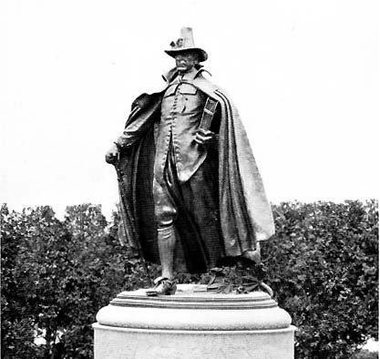
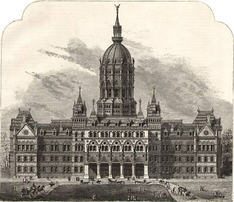

West Hartford: A Brief History
Native Presence:
Before Europeans arrived in West Hartford, the areas around the Connecticut River were used as winter camps by the Wampanoag Tribe. The river provided fish and the surrounding areas were good hunting grounds. The region also provided solace from the cold winters, as well as the spring flooding of the CT River.
European Settlement Timeline:
1636
Reverend Thomas Hooker leads group from Cambridge, Massachusetts and establishes the Hartford Colony.
1672
Proprietors of Hartford, now CTs Capital City, made a section to the west of the Hartford Colony, which is now West Hartford, then called the 'West Division'.
1767

Reverend Nathanial Hooker took a census that named West Hartford as an agricultural community, with the marjority of the space taken up by plow land, meadows, and pasture. The population was stated as 1000.
1792
Residents ask permission of Hartford to break off from Hartford and form their own town, however, this was not approved. Five years later, in 1797, this was tried again, again to no avail.
1806
CT General Assembly first names 'West Division' as the 'Society of West Hartford'.
1854
Petition to secede from Hartford was brought before the CT General Assembly in New Haven. It was signed by 153 residents of the then West Division, and the request was finally granted.
1910 - 1930
West Hartford population grows rapidly from 4,808 to 24,941 people. By 1960, the population had grown even more to 62,382 people.
1974
West Farms Mall opens, one of the largest shopping centers in West Hartford.